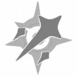
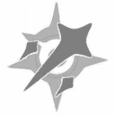

|
|  |  |
|  | 
I am Sangonomiya Kokomi, the Divine Priestess of Watatsumi Island. My journey with you will be an opportunity to unwind... Ahem, I mean... to survey beyond our borders.
Sangonomiya Kokomi is the Divine Priestess of Watatsumi Island in Inazuma, and the leader of the Watatsumi Resistence.
She is an extremely skilled strategist, but often overworks herself.